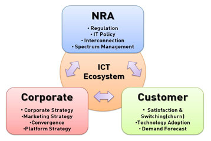

Welcome to SMIT LAB
SMIT means "Strategic Management of Information and Telecommunications".
SMIT laboratory is trying to be a worldwide leading lab of management research of information and telecommunications.
SMIT lab offers
SMIT offers an excellent training ground for future leaders in information and communications industry. SMIT attracts a diverse student body and has a flexible curriculum that allows students to pursue individual interests within a supportive and intellectually exciting environment.
We give you a warm welcome
The members of SMIT give a warm welcome to those who are interested in the subjects related to IT managerial issues such as demand forecast, strategic analysis and management, and other prospective and innovative subjects.
The future members of SMIT will benefit from close working relationships with the members of various leading IT organizations and institutions who are engaged in an extraordinary array of research and developing activities through various projects experience. The lab offers programs leading to an MS and Ph.D. in Dept. of Business and Technology Management. Thus, make your own future here in SMIT and we are here to help you to make your dream come true.
Still you may need more information. Feel free to contact us via e-Mail or via phone!
SMIT Lab offers programs leading to an MS and Ph.D. in Dept. of Business and Technology Management. Thus, make your own future here in SMIT and we are here to help you to make your dream come true.